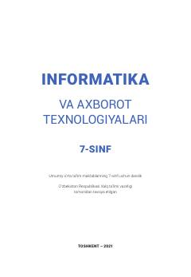

IV7-sinf o‘quvchilari uchun informatika va axborot texnologiyalari bo‘yicha darslik.
Ushbu darslik umumiy o‘rta ta’lim maktablarining 7-sinf o‘quvchilari uchun mo‘ljallangan. Unda axborotlarning kompyuterda tasvirlanishi, grafik axborotlarni qayta ishlash, animatsiya hamda HTML tili va veb-texnologiya asoslari yoritilgan.